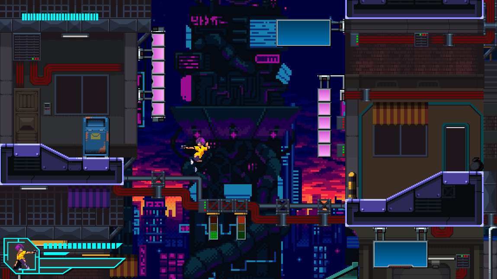

Cyberpunk Runner (Godot Prototype)
Project Overview
A high-fidelity 2D action-platformer prototype built in Godot 4.2. This project serves as a "Vertical Slice," demonstrating the ability to combine complex C# gameplay logic with polished visual systems, including parallax backgrounds and a responsive User Interface (UI).
Note: This project is a prototype focusing on the integration of C# with Godot's node system. It represents a technical exploration rather than a complete game loop.

Key Features & Systems
- Hybrid Architecture: Uses C# for core gameplay physics (Movement, Combat) and GDScript for engine-specific tasks, showcasing versatility in .NET integration.
- Dynamic UI System: Implemented a robust Heads-Up Display (HUD) featuring health bars, resource meters, and character portraits, anchored to the screen via CanvasLayer to remain static during camera movement.
- Parallax Environment: Created a depth-based visual experience using ParallaxBackground nodes to layer the cyberpunk city backdrop behind the active gameplay area.
- Physics-Based Combat: Prototyped a RigidBody2D projectile system where bullets handle their own collision logic and lifetime, allowing for decoupled combat interactions.
Technical Skills
- Godot Node System: Proficient use of TileMap for level construction (pipes, platforms) and Area2D for interactive triggers (NPCs, dialogue).
- Input Management: Configured a custom Input Map (WASD + Space + L) to handle complex simultaneous actions like moving while shooting.
- Visual Polish: Integrated pixel-perfect asset rendering and layer management to create a cohesive aesthetic matching the Cyberpunk theme.